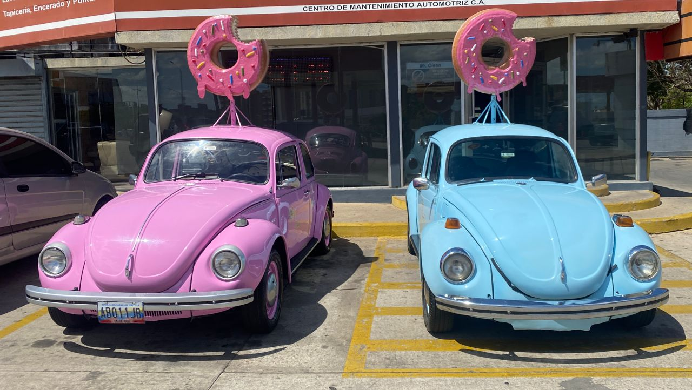

Dos apasionados emprendedores y amantes de la repostería llamados Julieth Valbuena y Jesús Chacín, compartían un sueño
en común: deleitar a las personas con deliciosas donas artesanales. Decidieron convertir su modesta casa en el epicentro
de su negocio de donas, llenando el ambiente con aromas dulces y creaciones irresistibles. Ellos se sumergieron en el
arte de la repostería, perfeccionando sus técnicas y experimentando con una amplia variedad de sabores y diseños únicos.
Su reputación comenzó a crecer rápidamente en la comunidad local, y pronto sus donas se convirtieron en una sensación en las redes sociales. A medida que la demanda aumentaba, se enfrentaron al desafío de cumplir con los pedidos y mantener la calidad que los había convertido en referentes en el mundo de las donas. Fue entonces cuando descubrieron el concepto de "dark kitchen", una forma innovadora de operar sin una tienda física tradicional. Emocionados por esta nueva posibilidad, transformaron su cocina en un espacio profesional completamente equipado.
Instalaron hornos de alta tecnología, mesas de trabajo espaciosas y herramientas especializadas para hacer de su hogar una auténtica fábrica de donas. El boca a boca hizo que la popularidad de sus donas creciera de manera exponencial. Sin embargo, Julieth y Jesús tenían una visión aún más audaz: llevar sus deliciosas creaciones directamente a los amantes de las donas en lugares inesperados.
Su reputación comenzó a crecer rápidamente en la comunidad local, y pronto sus donas se convirtieron en una sensación en las redes sociales. A medida que la demanda aumentaba, se enfrentaron al desafío de cumplir con los pedidos y mantener la calidad que los había convertido en referentes en el mundo de las donas. Fue entonces cuando descubrieron el concepto de "dark kitchen", una forma innovadora de operar sin una tienda física tradicional. Emocionados por esta nueva posibilidad, transformaron su cocina en un espacio profesional completamente equipado.
Instalaron hornos de alta tecnología, mesas de trabajo espaciosas y herramientas especializadas para hacer de su hogar una auténtica fábrica de donas. El boca a boca hizo que la popularidad de sus donas creciera de manera exponencial. Sin embargo, Julieth y Jesús tenían una visión aún más audaz: llevar sus deliciosas creaciones directamente a los amantes de las donas en lugares inesperados.
En medio de su apasionada búsqueda por llevar su negocio de donas a nuevas alturas, Julieth y Jesús se encontraron con
un viejo Volkswagen Super Escarabajo del año 1973. A simple vista, el automóvil estaba en un estado desastroso, pero
vieron en él un potencial único. Decidieron darle una nueva vida y convertirlo en el vehículo emblemático de su negocio.
Así comenzó la travesía de remodelación de "Volky". Julieth y Jesús se embarcaron en la tarea de devolverle su esplendor a "Volky". Poco a poco, dedicaron horas interminables para reparar su motor, renovar su chasis y pulir su carrocería desgastada. La paciencia y el amor que le dedicaron a su querido Volkswagen eran evidentes en cada detalle. Cuando finalmente terminaron a "Volky", se había transformado por completo. Ahora lucía un brillante color celeste que resaltaba en las calles, atrayendo miradas curiosas y despertando la emoción de aquellos que lo veían.
Era una verdadera joya en movimiento, un reflejo del espíritu emprendedor y la determinación. En el techo de "Volky" colocaron una dona gigante llamativa, con colores vivos que anunciaban la llegada de las deliciosas creaciones de "Soet Postres". Además, instalaron con cuidado un exhibidor de donas en el capó delantero, donde exhibían su variedad de sabores y diseños tentadores. "Volky" se convirtió en un símbolo de su pasión y dedicación por llevar alegría a través de sus donas.
El nuevo aspecto de "Volky" generó una gran expectativa en la comunidad. Las personas se acercaban emocionadas, admirando la transformación del querido escarabajo y deseando probar las delicias que ofrecían. Cada vez que "Volky" aparecía en un nuevo lugar, las donas volaban de su exhibidor y la reputación de Soet Postres seguía creciendo.
La historia de "Volky" demostraba que incluso algo que parece estar en ruinas puede renacer con amor, dedicación y una visión clara. En este encontraron una oportunidad para hacer realidad su sueño de llevar sus donas a todos los rincones de la ciudad. "Volky" se convirtió en un símbolo de su espíritu emprendedor y una parte inseparable de la historia de "Soet Postres".
Así comenzó la travesía de remodelación de "Volky". Julieth y Jesús se embarcaron en la tarea de devolverle su esplendor a "Volky". Poco a poco, dedicaron horas interminables para reparar su motor, renovar su chasis y pulir su carrocería desgastada. La paciencia y el amor que le dedicaron a su querido Volkswagen eran evidentes en cada detalle. Cuando finalmente terminaron a "Volky", se había transformado por completo. Ahora lucía un brillante color celeste que resaltaba en las calles, atrayendo miradas curiosas y despertando la emoción de aquellos que lo veían.
Era una verdadera joya en movimiento, un reflejo del espíritu emprendedor y la determinación. En el techo de "Volky" colocaron una dona gigante llamativa, con colores vivos que anunciaban la llegada de las deliciosas creaciones de "Soet Postres". Además, instalaron con cuidado un exhibidor de donas en el capó delantero, donde exhibían su variedad de sabores y diseños tentadores. "Volky" se convirtió en un símbolo de su pasión y dedicación por llevar alegría a través de sus donas.
El nuevo aspecto de "Volky" generó una gran expectativa en la comunidad. Las personas se acercaban emocionadas, admirando la transformación del querido escarabajo y deseando probar las delicias que ofrecían. Cada vez que "Volky" aparecía en un nuevo lugar, las donas volaban de su exhibidor y la reputación de Soet Postres seguía creciendo.
La historia de "Volky" demostraba que incluso algo que parece estar en ruinas puede renacer con amor, dedicación y una visión clara. En este encontraron una oportunidad para hacer realidad su sueño de llevar sus donas a todos los rincones de la ciudad. "Volky" se convirtió en un símbolo de su espíritu emprendedor y una parte inseparable de la historia de "Soet Postres".
Armados con "Volky" y su carismático diseño, se embarcaron en una travesía por las calles de la ciudad. Estacionaban en
lugares estratégicos, y rápidamente se convertían en el centro de atención. La gente se acercaba maravillada por la dona
gigante en el techo y se dejaba cautivar por la variedad de donas frescas y tentadoras que ofrecian.
El impacto de "Volky" en la comunidad fue extraordinario. Las redes sociales se inundaron con fotos y reseñas entusiastas de las donas de Soet, y la demanda no dejaba de crecer. Fiestas de cumpleaños, eventos corporativos y festivales se convirtieron en escenarios donde "Volky" era el invitado de honor, dejando sonrisas y paladares satisfechos a su paso.
El impacto de "Volky" en la comunidad fue extraordinario. Las redes sociales se inundaron con fotos y reseñas entusiastas de las donas de Soet, y la demanda no dejaba de crecer. Fiestas de cumpleaños, eventos corporativos y festivales se convirtieron en escenarios donde "Volky" era el invitado de honor, dejando sonrisas y paladares satisfechos a su paso.
A medida que la popularidad de Soet seguía creciendo, una nueva adición llegó a la familia. Decidieron dar la bienvenida
a otro Volkswagen Super Escarabajo, al que cariñosamente llamaron "Pinky". Pintado en un hermoso tono de rosa, "Pinky"
se convirtió en un complemento perfecto para "Volky" y juntos formaron un dúo imparable. Con dos vehículos emblemáticos
a su disposición, Soet amplio su alcance y llevo su negocio de donas a nuevas alturas. Ambos autos, "Volky" y "Pinky",
estaban equipados con donas gigantes en el techo y exhibidores en el capó delantero, creando un espectáculo colorido y
atrayente en cada parada.
La comunidad se emocionó aún más al ver a "Volky" y "Pinky" juntos, y la demanda por las donas de Soet se disparó. Su amor por la repostería y la atención a los detalles se convirtieron en su distintivo, y la gente hacía filas solo para probar una de sus famosas donas. El éxito "Soet" continuó creciendo a pasos agigantados. Sus donas se hicieron conocidas en toda la región, y la gente viajaba desde lejos para probar las creaciones únicas que solo ellos podían ofrecer. El nombre "Soet", que significa "dulce" en holandés, reflejaba a la perfección la pasión por endulzar la vida de las personas a través de sus donas y otros postres exquisitos.
Con "Soet Postres" como marca distintiva, "Volky" y "Pinky" se convirtieron en los vehículos icónicos que llevan consigo el sabor único y la alegría de las donas de "Soet". Los autos adornados con donas gigantes en el techo y exhibidores en el capó delantero se han vuelto inconfundibles, y la gente espera con ansias verlos aparecer en su vecindario.
La comunidad se emocionó aún más al ver a "Volky" y "Pinky" juntos, y la demanda por las donas de Soet se disparó. Su amor por la repostería y la atención a los detalles se convirtieron en su distintivo, y la gente hacía filas solo para probar una de sus famosas donas. El éxito "Soet" continuó creciendo a pasos agigantados. Sus donas se hicieron conocidas en toda la región, y la gente viajaba desde lejos para probar las creaciones únicas que solo ellos podían ofrecer. El nombre "Soet", que significa "dulce" en holandés, reflejaba a la perfección la pasión por endulzar la vida de las personas a través de sus donas y otros postres exquisitos.
Con "Soet Postres" como marca distintiva, "Volky" y "Pinky" se convirtieron en los vehículos icónicos que llevan consigo el sabor único y la alegría de las donas de "Soet". Los autos adornados con donas gigantes en el techo y exhibidores en el capó delantero se han vuelto inconfundibles, y la gente espera con ansias verlos aparecer en su vecindario.
A medida que "Soet Postres" se expandía y se ganaba un lugar en el corazón de la comunidad, Julieth y Jesús se dieron
cuenta de que era hora de dar un paso más allá. Reconociendo la demanda y la pasión que sus donas habían generado,
decidieron construir un local permanente para ofrecer una experiencia completa a sus clientes. El nuevo local de "Soet
Postres" es un sueño hecho realidad.
Diseñado con atención meticulosa, es un lugar donde los clientes pueden disfrutar de un ambiente acogedor y encantador. El aroma de las donas recién horneadas llena el lugar, una experiencia verdaderamente memorable para todos los visitantes. Con su nombre, "Soet Postres", brillando en el letrero del local, Julieth, Jesús y su equipo de talentosos reposteros continuan creando magia en forma de donas. La comunidad los apoyaba con entusiasmo y su negocio sigue creciendo, atrayendo a más y más amantes de las donas que ansian probar sus creaciones únicas.
La historia de "Soet Postres" es un testimonio del poder de los sueños y la perseverancia. Desde sus modestos comienzos en su casa hasta el éxito en su local, demuestran que con pasión, creatividad y un toque de dulzura, se puede lograr cualquier meta. "Soet Postres" es un lugar de encuentro para los amantes de las donas, donde la magia de la repostería se fusiona con la calidez de una comunidad unida.
Nunca hay que olvidar las raíces de su éxito: la pasión, la dedicación y el espíritu emprendedor que los llevo desde su casa a las calles con "Volky". A medida que miran hacia atrás en su viaje, Julieth y Jesús no pueden dejar de sonreír al recordar sus modestos comienzos en su casa, el emprendimiento audaz con "Volky" y el emocionante crecimiento que les había llevado a construir su propio local.
Diseñado con atención meticulosa, es un lugar donde los clientes pueden disfrutar de un ambiente acogedor y encantador. El aroma de las donas recién horneadas llena el lugar, una experiencia verdaderamente memorable para todos los visitantes. Con su nombre, "Soet Postres", brillando en el letrero del local, Julieth, Jesús y su equipo de talentosos reposteros continuan creando magia en forma de donas. La comunidad los apoyaba con entusiasmo y su negocio sigue creciendo, atrayendo a más y más amantes de las donas que ansian probar sus creaciones únicas.
La historia de "Soet Postres" es un testimonio del poder de los sueños y la perseverancia. Desde sus modestos comienzos en su casa hasta el éxito en su local, demuestran que con pasión, creatividad y un toque de dulzura, se puede lograr cualquier meta. "Soet Postres" es un lugar de encuentro para los amantes de las donas, donde la magia de la repostería se fusiona con la calidez de una comunidad unida.
Nunca hay que olvidar las raíces de su éxito: la pasión, la dedicación y el espíritu emprendedor que los llevo desde su casa a las calles con "Volky". A medida que miran hacia atrás en su viaje, Julieth y Jesús no pueden dejar de sonreír al recordar sus modestos comienzos en su casa, el emprendimiento audaz con "Volky" y el emocionante crecimiento que les había llevado a construir su propio local.

